EpiDBot User Manual¶
AI-Powered Public Health Data Analytics
Version 2.8.0 | Kwar-AI
Table of Contents¶
- Welcome
- Getting Started
- Your First Analysis
- The Chat Interface
- Data Sources
- My Data
- Analyzing Data
- In-Browser Code Editor (IDE)
- Visualizations & Plots
- My Plots
- Projects
- Blipper — The Data Storytelling Feed
- Malaria Atlas
- Reports
- Sessions
- Search
- Knowledge Base
- Settings
- Subscription Plans & Feature Gating
- Tips & Best Practices
- Supported Languages
- Troubleshooting
- Glossary
Welcome¶
EpiDBot is an AI assistant that helps you explore, analyze, and visualize public health data from around the world. Whether you are studying disease trends in Brazil, comparing health indicators across countries, or generating reports for your research, EpiDBot puts powerful epidemiological tools at your fingertips through a simple conversational interface.
What Can EpiDBot Do?¶
- Download and query public health datasets from Brazil (DATASUS, ANVISA), WHO, ECDC, World Bank, PAHO, and more
- Run statistical analyses with temporal, spatial, and demographic breakdowns
- Generate charts, maps, and plots automatically from your data — including mindmaps and choropleth maps with smart classification
- Execute custom Python and SQL code in a secure sandbox environment
- Create downloadable PDF reports with built-in templates (Outbreak, Risk Assessment, Scientific, etc.) and custom CSS themes
- Upload your own datasets (CSV, Excel, GeoJSON, and more) for private analysis alongside public data
- Upload your own report templates (Markdown + CSS) and share them with other users
- Share plots and reports on Blipper — our internal data storytelling feed (like, reply, follow colleagues)
- Search a knowledge base of epidemiological documents and references, and explore each collection as a wiki with an interactive knowledge graph
- Organize your work into projects — group related sessions, reports, figures, and datasets into shareable workspaces
- Write and run Python in your browser with the built-in code editor — no installation required
- Answer clarifying questions — when a request is ambiguous, EpiDBot pauses mid-analysis and asks you structured questions
- Stay up to date with an optional weekly bilingual newsletter of public-health publications and data updates
- Remember your conversations across sessions so you can pick up where you left off
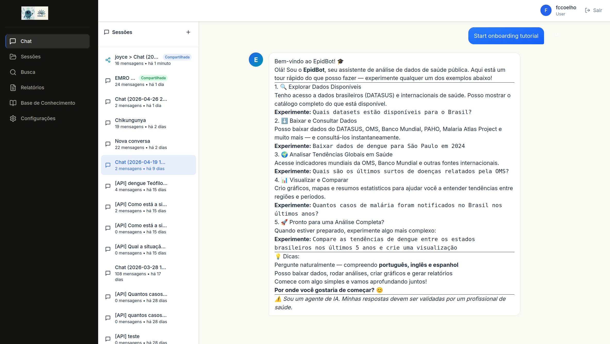
Getting Started¶
Creating an Account¶
EpiDBot is currently in beta testing. To request access:
- Visit the EpiDBot login page
- Click the "Request an invitation" link in the beta notice banner
- Fill out the registration form
- Once approved, you will receive your credentials
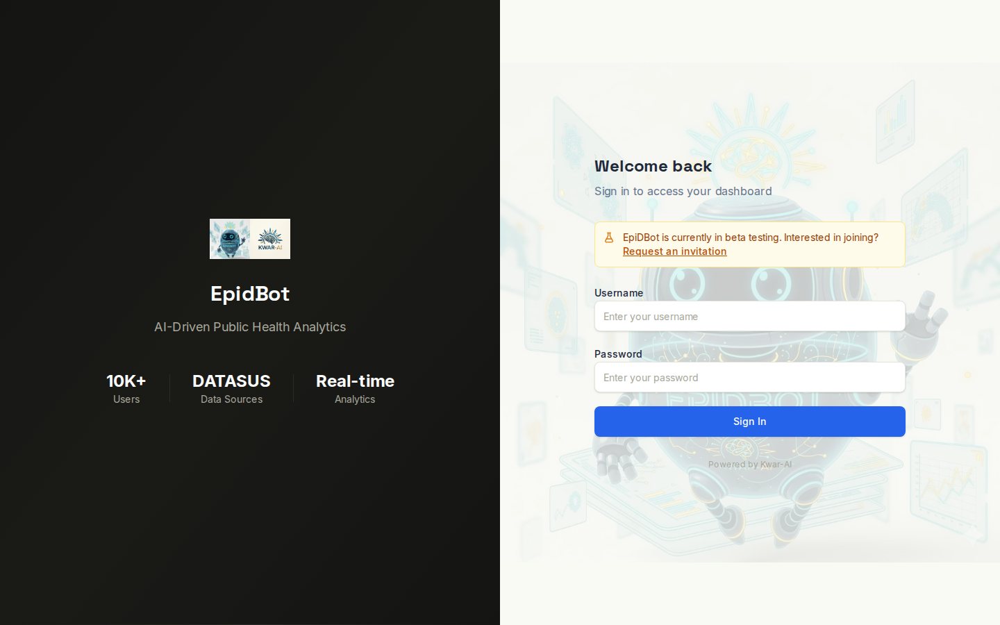
Logging In¶
- Navigate to the EpiDBot login page
- Enter your username and password
- Click Sign In
You will be redirected to the chat interface. Your session is secured with JWT authentication.
Email Verification¶
After registration, you will receive a verification email. Click the link to activate your account. If you did not receive it, go to Settings > Profile and click Resend verification email.
Choosing Your Language¶
EpiDBot supports five interface languages:
| Language | Code |
|---|---|
| English | en |
| Portugues (Brasil) | pt-BR |
| Espanol | es |
| 简体中文 | zh-CN |
| العربية | ar |
EpiDBot automatically detects your browser language on your first visit. You can change it at any time in Settings > Language (see Settings).
You can also set the AI response language independently — for example, using the interface in English while receiving analysis responses in Portuguese.
Navigation Overview¶
The sidebar (left side on desktop, hamburger menu on mobile) provides access to all sections:
| Icon | Section | Description |
|---|---|---|
| MessageSquare | Chat | Start a new analysis conversation |
| FolderOpen | Sessions | Browse and manage past conversations |
| Search | Search | Search across messages and code snippets |
| Database | My Data | Upload and manage your own datasets |
| FileText | Reports | Download generated PDF/Markdown reports |
| Image | My Plots | Browse and manage your generated and uploaded plots |
| FolderKanban | Projects | Organize sessions, reports, figures, and datasets into workspaces |
| Blipper | Blipper | The data storytelling feed |
| BookOpen | Knowledge Base | Manage documents and references |
| Star | Favorites | Your starred reports, plots and datasets |
| Settings | Settings | Profile, API keys, plans, Git integrations, Zotero, voice, newsletter, language preferences |
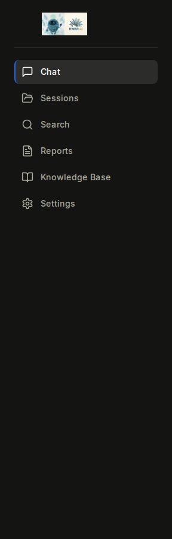
Your First Analysis¶
When you open the chat for the first time, EpiDBot will greet you with an onboarding tutorial to help you get started. The welcome screen also displays analysis starter templates — clickable suggestion cards with common analysis prompts such as "Analyze dengue trends" or "Compare health indicators." Click any card to immediately start an analysis, or type your own question in the input field.
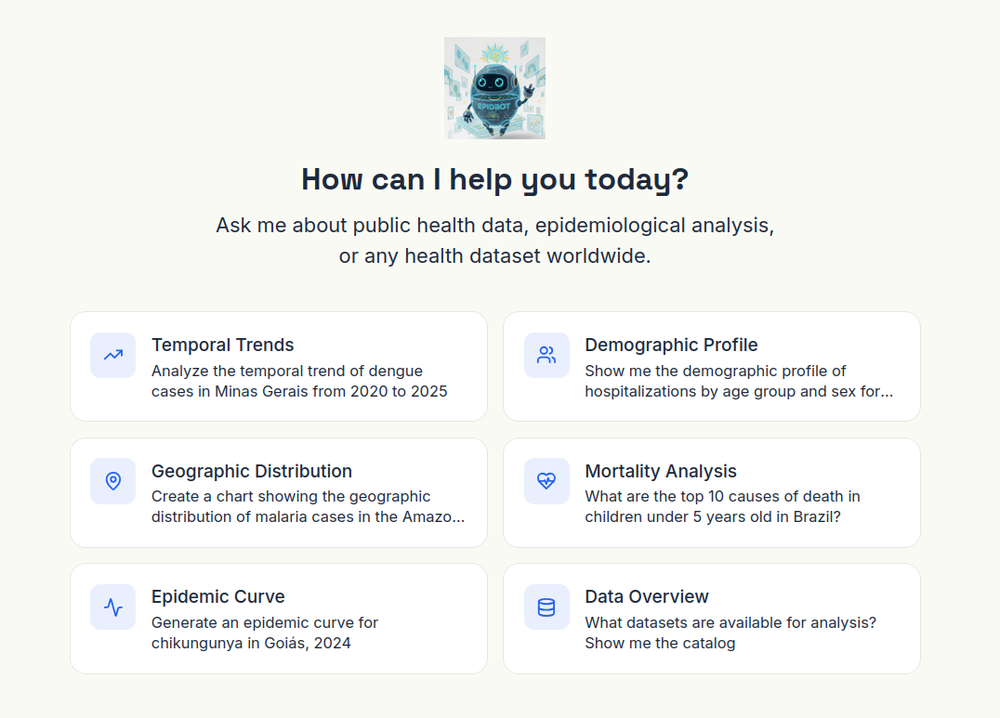
Here is a quick walkthrough:
Step 1: Explore Available Data¶
Type a question like:
What datasets are available?
EpiDBot will list the data sources you can access, including Brazilian DATASUS systems (SINAN, SIM, SINASC), WHO indicators, ECDC surveillance data, and more.
Step 2: Download Data¶
Ask EpiDBot to download a specific dataset:
Download dengue data for Sao Paulo in 2023
EpiDBot will fetch the data, store it as a parquet file, and confirm when it is ready for analysis.
Step 3: Analyze and Visualize¶
Show me a bar chart of dengue cases by month
EpiDBot will query the data, generate the chart, and display it directly in the chat.
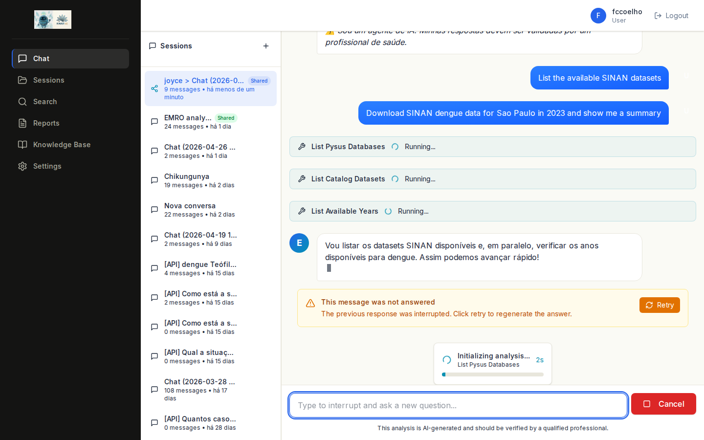
The Chat Interface¶
The chat is your primary workspace in EpiDBot. It is a full-featured conversational interface with real-time streaming, tool execution feedback, and rich content rendering.
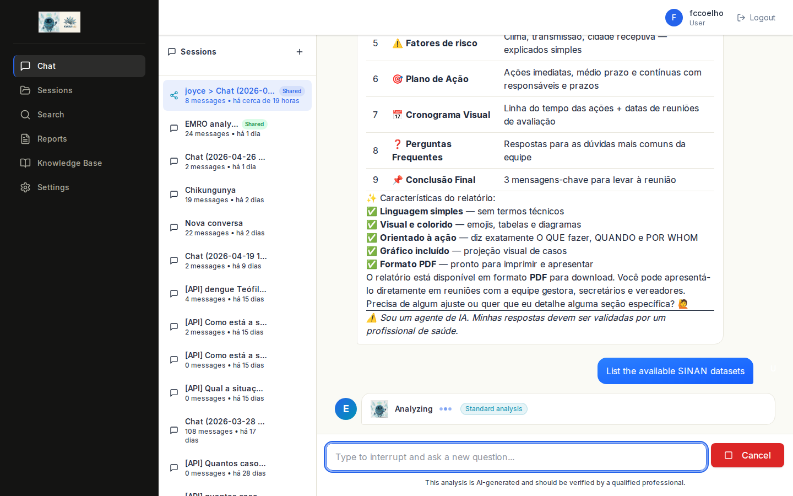
Sending Messages¶
- Type your message in the input field at the bottom
- Press Enter to send (Shift+Enter for a new line)
- During streaming, you can type a new message to interrupt and redirect the analysis
- Use voice input by clicking the microphone button inside the input field. Speak naturally and your words will be transcribed in real-time. Click the microphone again to stop recording. Voice input uses your browser's built-in speech recognition.
Streaming Responses¶
EpiDBot streams responses in real-time. You will see:
- Analyzing animation — the EpiDBot avatar pulses with a complexity indicator:
- "Quick answer" — simple factual questions
- "Standard analysis" — single data lookups
- "Detailed analysis" — multi-step analysis with plots
-
"Deep analysis" — complex modeling or cross-dataset work
-
Tool execution — when EpiDBot uses a tool (downloading data, running SQL, generating a plot), you will see:
- The tool name and a progress bar
- Elapsed time counter
- Status messages ("Processing...", "Analyzing data...")
-
Expandable code preview showing what code is running
-
Response text — the answer streams in character by character with a typing cursor
Interrupting a Response¶
While EpiDBot is processing or streaming, you can:
- Type a new message to interrupt and redirect the analysis
- Click the Cancel button (red square icon) to stop the current response entirely
When you interrupt, any partial results are saved, and a new conversation turn begins with your new message.
Answering Clarifying Questions¶
Sometimes a request can be interpreted in more than one way. Instead of guessing, EpiDBot can pause mid-analysis and show a question card with one or more structured questions (up to four at once). Each question has:
- A short header describing the topic
- Option buttons — single-choice (round buttons) or "select all that apply" (square checkboxes), each with a brief description
- A free-text field to type your own answer if none of the options fit
Select your answers for every question and click Submit answers — EpiDBot resumes the analysis using them. If you do not respond within about five minutes, EpiDBot continues with sensible defaults.
Avatars and Sender Attribution¶
Every user message displays the sender's avatar next to it. In shared sessions, each message shows the avatar of the person who actually wrote it — so when colleagues contribute to a shared conversation, you can see at a glance who said what. Users without a profile photo are shown with their initials.
Editing Messages¶
You can edit your last sent message by hovering over it and clicking the pencil icon that appears below. Edit the text in the inline editor and press Enter to resubmit. EpiDBot will discard the previous response and generate a new one based on your edited message. Press Escape to cancel editing.
Rich Content in Messages¶
EpiDBot renders responses with full formatting support:
- Markdown — headings, bold, italic, lists, links
- Tables — sortable data tables with styled headers
- Code blocks — syntax-highlighted with a dark theme; hover to reveal a copy button that copies the code to your clipboard
- Math/LaTeX — mathematical notation rendered with KaTeX
- Images and plots — charts and maps displayed inline
- Data tables — hover to reveal Copy as TSV and Download CSV buttons for exporting table data
Copying Messages¶
Hover over any assistant message to reveal a copy button that copies the full response text to your clipboard.
Unanswered Messages¶
If a message was sent but never answered (e.g., due to a connection issue), an amber warning banner appears with a Retry button.
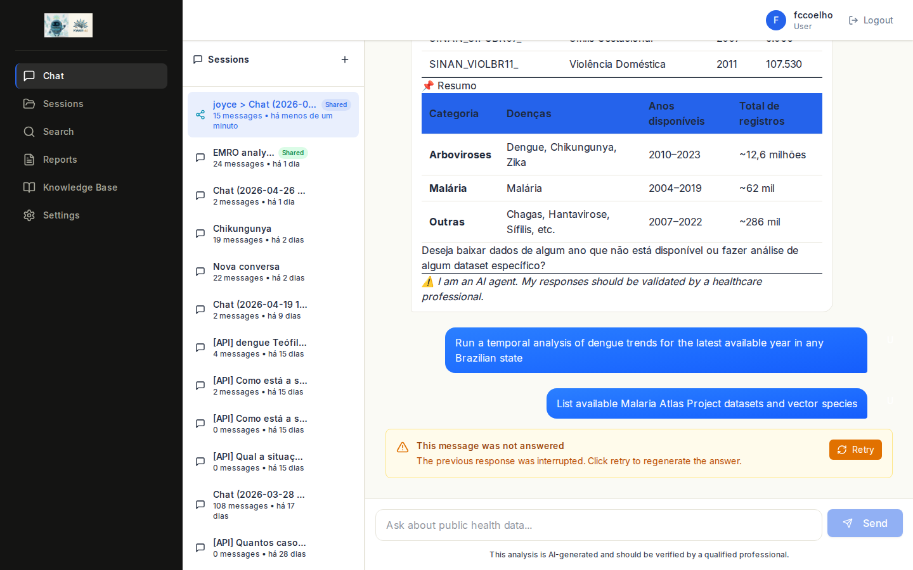
Quota Enforcement¶
Before sending a message, EpiDBot checks your token quota. If you have exceeded your plan limit, an amber banner informs you of the quota status and when your quota resets.
Exporting Chat as PDF¶
Click the Export PDF button at the top of the chat to download the entire conversation as a formatted PDF document. This includes all messages, plots (embedded as images), tables, and formatting. You can also use the keyboard shortcut Ctrl+Shift+E.
Message Feedback¶
After EpiDBot responds, you can rate the quality of the answer using the thumbs up or thumbs down buttons that appear when hovering over an assistant message. Click the same rating again to remove it. This feedback helps improve the system over time.
Keyboard Shortcuts¶
| Shortcut | Action |
|---|---|
Ctrl+K |
Open search |
Ctrl+N |
Start new session |
Ctrl+Shift+E |
Export chat as PDF |
Escape |
Close lightbox / cancel edit |
Data Sources¶
EpiDBot connects to a wide range of public health data sources worldwide. Ask naturally — EpiDBot will automatically select the right source for your query.
Brazilian Health Data (DATASUS)¶
| System | Description |
|---|---|
| SINAN | Disease notification system (dengue, Zika, chikungunya, tuberculosis, HIV, etc.) |
| SIM | Mortality information system |
| SINASC | Live birth information system |
| SIH/SIA | Hospital and outpatient information systems |
| SINAN-NET | National notifiable diseases network |
You can query data by state, year, municipality, and disease. Example queries:
Download SINAN dengue data for Rio de Janeiro in 2023
What is the mortality rate for tuberculosis in the Northeast region?
List all available datasets for 2024
International Data Sources¶
Plan requirement
The international data sources below (ECDC, World Bank, PAHO, HealthData.gov, Mosqlimate, ANVISA, Pathoplexus, Malaria Atlas, GADM, GBIF, Eurostat, NZ Health) require the Pro plan or higher. The core Brazilian DATASUS systems and WHO indicators are available on all plans, including Free. See Subscription Plans & Feature Gating.
| Source | Coverage | What You Can Get |
|---|---|---|
| WHO (Global Health Observatory) | Global | Health indicators, disease outbreaks, country profiles |
| ECDC (European Centre for Disease Prevention and Control) | Europe | Surveillance data, disease reports, epidemiological updates |
| World Bank | Global | Health expenditure, life expectancy, immunization rates, demographic indicators |
| PAHO (Pan American Health Organization) | Americas | Immunization coverage, malaria/dengue data, health indicators |
| HealthData.gov | United States | Hospital capacity, COVID metrics, vaccination data, nursing home data |
| Malaria Atlas Project | Global | Plasmodium prevalence, vector occurrence, administrative boundaries, raster surfaces |
| Pathoplexus | Global | Genomic sequence counts for organisms of interest |
Mosqlimate (Brazilian Climate & Epidemiological Data)¶
- InfoDengue — epidemiological reports for dengue and other arboviruses
- Climate data — daily and weekly weather observations
- Mosquito occurrence — Aedes aegypti and Aedes albopictus occurrence records
- EpiScanner — automated epidemiological surveillance data
- Prediction models — browse registered forecasting models for mosquito-borne diseases
- Predictions — view submitted predictions and forecasts from the model registry
Geographic Data¶
- GADM — administrative boundaries for any country (states, municipalities, regions)
- Brazilian municipalities — IBGE codes, coordinates, state-level listings
More Specialized Sources¶
- ANVISA (Brazilian Health Regulatory Agency) — 15 open datasets covering medicines, food safety, cosmetics, pharmacovigilance, and more. Data is accessed via Brazil's federal open data portal (dados.gov.br).
- ECDC Atlas of Infectious Diseases — 59 diseases across 8 categories (vaccine-preventable, food/waterborne, STIs, vector-borne, respiratory, zoonotic) with antimicrobial resistance data for all EU/EEA countries.
- New Zealand Health Data — mortality records, hospital events, life tables, and immunisation coverage from New Zealand's Ministry of Health.
Example Queries¶
What are the latest WHO disease outbreaks?
Compare life expectancy across South American countries using World Bank data
Download malaria vector occurrence data for Kenya
List all ECDC surveillance datasets available
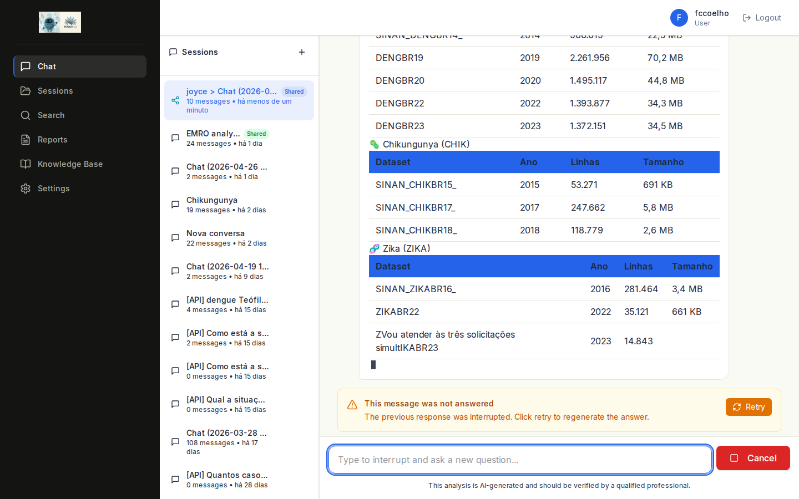
My Data¶
The My Data page lets you upload, manage, and preview your own datasets for private analysis alongside public data sources.
Uploading Datasets¶
- Navigate to My Data in the sidebar
- Click the upload area or drag and drop a file
- Optionally add a description for your dataset
- Supported formats: CSV, ODS, XLSX, GeoJSON, Shapefile (.zip), GeoPackage (max 50 MB per file)
Uploaded datasets are stored privately under your account and can be queried in the chat just like public data.
Plan limits
The number of uploaded datasets and total storage depend on your plan — Free: 1 dataset / 100 MB, Pro: 10 / 5 GB, Max: 50 / 25 GB, Team: unlimited. See Subscription Plans & Feature Gating.
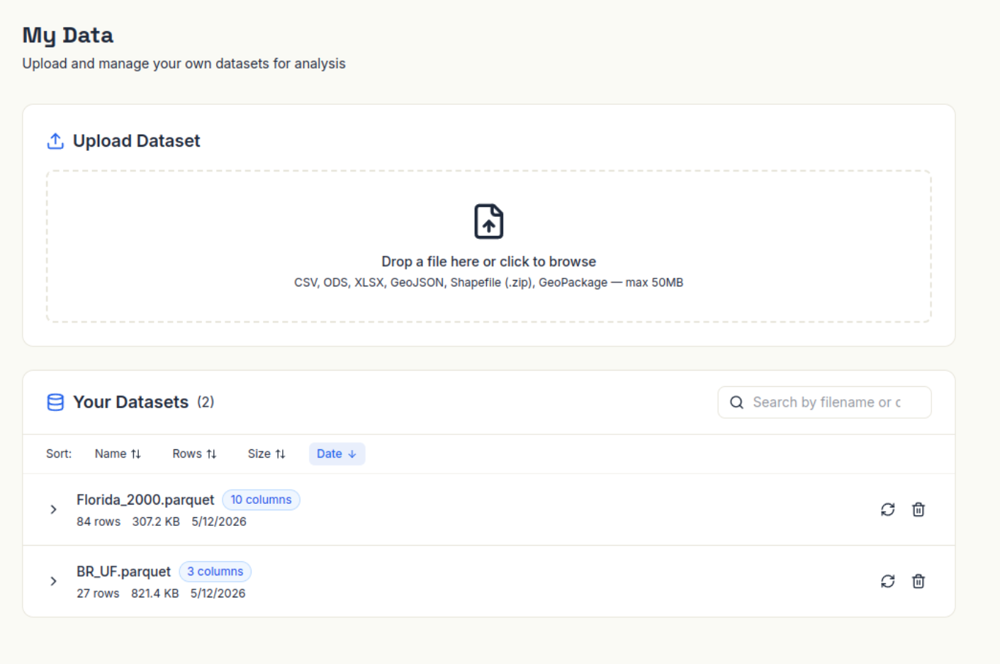
Browsing and Searching¶
The dataset list shows each file with its name, row count, file size, and upload date. Use the search bar to filter by filename or description. Sort by Name, Rows, Size, or Date using the sort controls.
Previewing Data¶
Click a dataset to expand it. Two tabs are available:
- Schema — shows column names, data types, and nullable flags
- Preview — displays the first 10 rows of data in a scrollable table (up to 15 columns shown, with horizontal scroll for wider datasets)
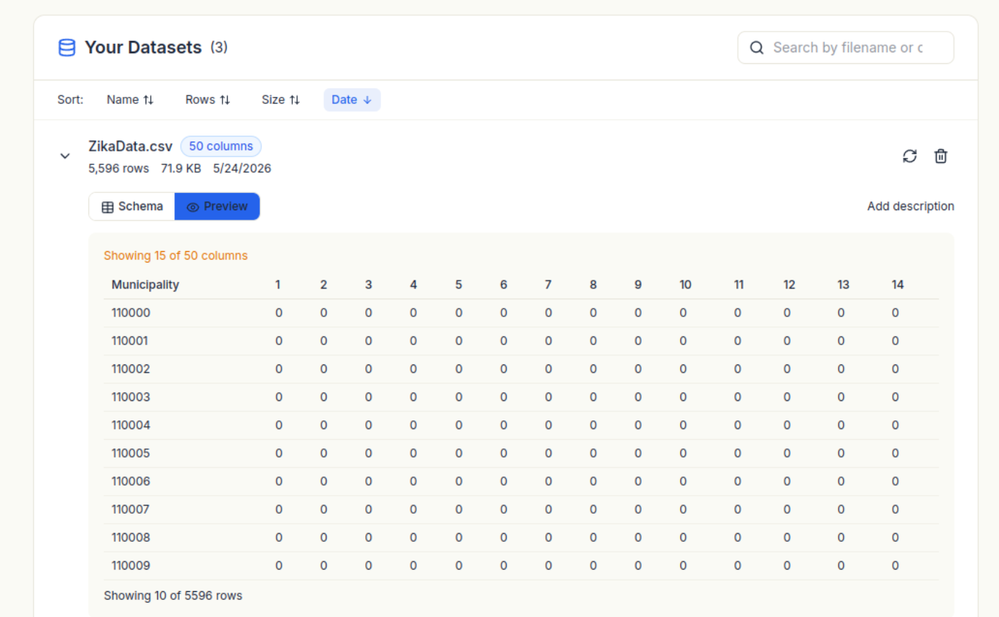
Managing Datasets¶
- Edit description — click the description text to add or modify a description
- Refresh — update the dataset metadata
- Delete — remove the dataset (with confirmation)
Analyzing Data¶
EpiDBot provides a comprehensive suite of analysis tools. Once data is downloaded or available in the catalog, you can ask for any type of analysis.
Statistical Analysis¶
| Analysis Type | Example Query |
|---|---|
| Temporal analysis | "Show me the trend of dengue cases over time in Sao Paulo" |
| Spatial analysis | "Which municipalities have the highest Zika incidence?" |
| Demographic analysis | "Break down tuberculosis cases by age group and sex" |
| Data quality report | "Generate a data quality report for this dataset" |
| Cross-dataset comparison | "Compare dengue and Zika trends in the same region" |
SQL Queries¶
You can ask EpiDBot to run SQL queries directly on downloaded data:
Query the dengue dataset to find the top 10 municipalities by case count in 2023
EpiDBot translates your request into DuckDB SQL and returns the results as a formatted table.
Sandbox Code Execution¶
For advanced analysis, EpiDBot can execute custom Python or SQL code in an isolated sandbox environment:
Run a Python analysis to calculate the rolling 7-day average of dengue cases
The sandbox includes common scientific libraries: pandas, numpy, matplotlib, seaborn, scikit-learn, and more.
Actuarial Modeling¶
Plan requirement
Actuarial modeling requires the Pro plan or higher. See Subscription Plans & Feature Gating.
EpiDBot includes a suite of actuarial modeling tools commonly used in insurance and risk analysis, driven entirely by natural language:
| Capability | What You Get |
|---|---|
| Loss reserving | Chain-ladder, Bornhuetter-Ferguson, and Cape Cod methods on run-off triangles, with per-period reserves, IBNR estimates, Mack standard errors, and development plots |
| Claim modeling | Fit claim severity/frequency distributions by maximum likelihood, with goodness-of-fit tests and pricing of deductibles and limits (VaR/TVaR) |
| Portfolio aggregation | Combine component losses into a full portfolio loss distribution (FFT, Panjer recursion, Monte Carlo) and price reinsurance layers (excess-of-loss, stop-loss, quota share) |
| Lifetime modeling | Fit parametric survival/mortality models (exponential, Weibull, log-normal, and more, optionally with covariates), with life expectancy, median lifetime, survival, and hazard plots |
Example query:
Using this run-off triangle of claim payments, estimate the IBNR reserves with the chain-ladder method and show the development plot
Exporting Results¶
Export the analysis results as a CSV file
EpiDBot supports exporting query results in CSV, JSON, Excel, and Parquet formats. Ask naturally:
Export these results as an Excel file
Save the data as a Parquet file
Exported files are downloaded directly to your computer.
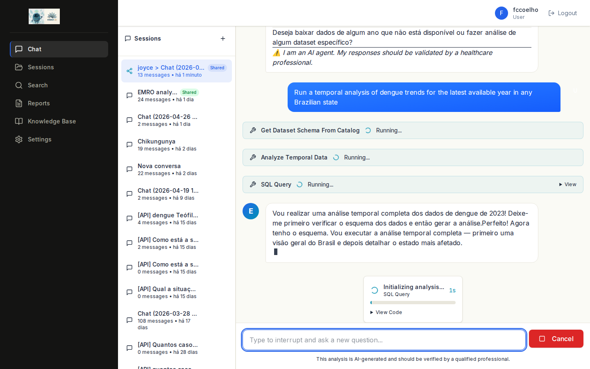
In-Browser Code Editor (IDE)¶
The IDE lets you write and run Python entirely in your browser — no installation, no server round-trip. It is powered by Pyodide (Python compiled to WebAssembly) and comes with numpy, pandas, matplotlib, and DuckDB preloaded. Extra pure-Python packages can be installed on the fly with the built-in package installer (micropip).
Opening the IDE¶
- Search page — click Edit & Run on any saved code snippet
- My Plots — click Edit & Run on a plot card to open an editable copy of its code
- Reports — open a report's Analysis code panel and click Open in IDE next to any snippet
Writing and Running Code¶
- The editor provides Python syntax highlighting; click Run to execute
- Output (text, figures, DataFrames) appears in the output panel below, Jupyter-style
- Drag the splitter between editor and output panel to resize them (double-click resets the split)
- Execution is limited to 30 seconds per run — for longer jobs, download the code and run it locally
Loading Data¶
- Click Load Data to browse catalog datasets and insert the corresponding
load_dataset(...)call into your code - Files under the server's
/data/directory — including your own private uploads — are transparently available at their usual paths, sopandas.read_parquet(...),open(...), and DuckDB queries work as-is (files up to 300 MB)
Saving Snippets¶
- Click Save to store your code as a reusable snippet (searchable on the Search page)
- Snippets keep a version history you can browse and restore
- A snippet being edited is locked for 30 minutes so collaborators cannot overwrite your work in parallel
The IDE is available on all plans.
Visualizations & Plots¶
EpiDBot can generate a wide variety of visualizations automatically. Just describe what you want to see.
Chart Types¶
| Chart Type | Example |
|---|---|
| Bar chart | "Show a bar chart of cases by state" |
| Line chart | "Plot the temporal trend of malaria cases" |
| Choropleth map | "Create a map of dengue incidence by municipality" |
| Histogram | "Show the age distribution of tuberculosis patients" |
| Box plot | "Compare the distribution of cases across regions" |
| Bubble chart | "Plot GDP vs. life expectancy with population as bubble size" |
| Stacked bar | "Show disease cases stacked by age group" |
| Raster/map | "Render the malaria prevalence raster for Africa" |
| Diagram/flowchart | "Create a flowchart showing the epidemiological surveillance workflow" |
Working with Plots¶
- Plots are displayed inline in the chat
- All plots are saved and can be referenced later
- You can ask EpiDBot to adjust colors, labels, or chart type
- Use "List available plots" to see previously generated visualizations
Example Queries¶
Compare dengue cases across Brazilian states for the last 5 years and create a visualization
Generate a choropleth map of HIV incidence by municipality in Rio de Janeiro
Plot a time series of WHO-reported cholera outbreaks
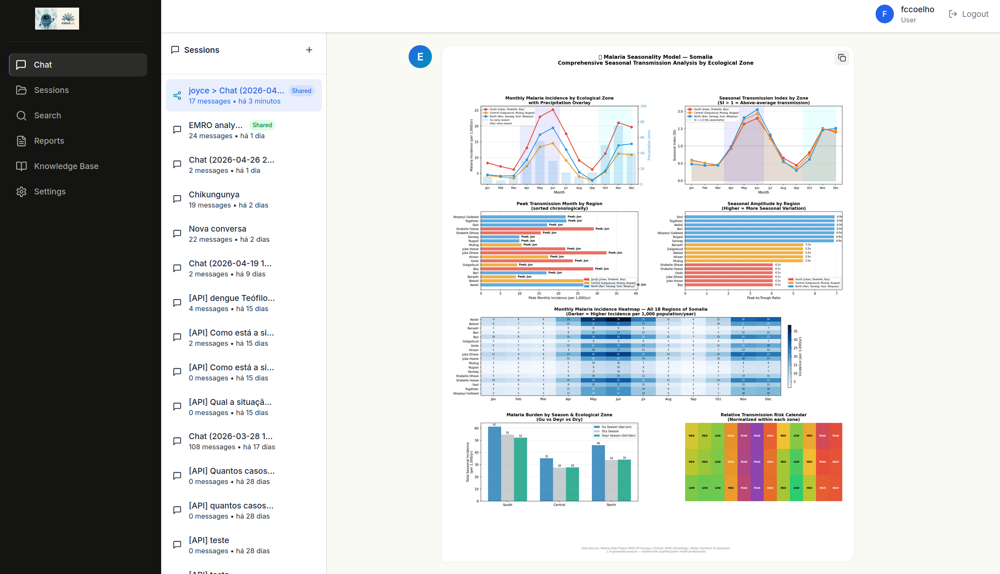
My Plots¶
The My Plots page provides a gallery of all your generated and uploaded visualizations in one place.
Accessing My Plots¶
Click My Plots in the sidebar to browse all your plots displayed as a card grid.
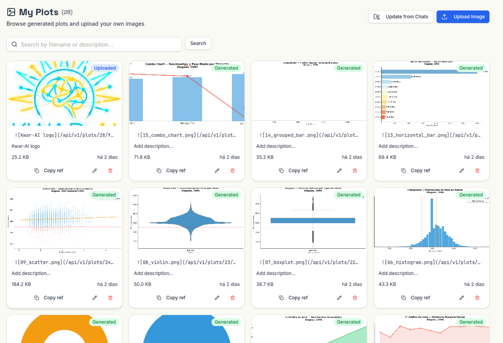
Browsing Plots¶
Each plot card shows a thumbnail, filename, and description. Use the search bar to filter plots by filename or description.
Lightbox Preview¶
Click any plot image to open a full-size lightbox preview that scales to fit your browser window. Press Escape or click outside the image to close.
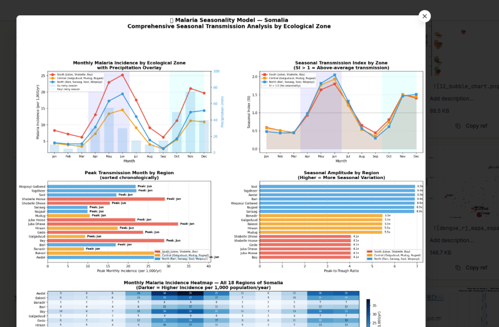
Managing Plots¶
- Copy reference — copy the markdown image reference for use in chat or reports
- Edit & Run — open the plot's code in the in-browser IDE to tweak and regenerate it
- Add to project — link the plot to one of your projects
- Edit description — add or modify the plot description
- Delete — remove the plot (with confirmation)
- Upload your own images (PNG, JPG, WebP, GIF, SVG)
- Sync from chats — click the sync button to scan your chat history and register any plots not yet in the gallery
Projects¶
Projects are transversal workspaces that link your existing sessions, reports, figures, and datasets around a common theme — for example, "Dengue Recife 2026". Items stay where they live (a report remains on the Reports page, a figure in My Plots); the project simply gathers them in one place. Projects are available on all plans.
Creating a Project¶
- Click Projects in the sidebar
- Click New project, enter a name and an optional description, and click Create
You can also manage projects from the chat — just ask:
Create a project called "Dengue Recife 2026" and add my latest dengue report to it
Adding Items¶
On the My Plots, Reports, My Data, and Sessions pages, click the Add to project button on any card, then:
- Pick one of your projects from the list, or
- Type a new project name and click Create & add
Browsing Projects¶
Each project card shows the name, description, and per-type item counts (sessions, reports, figures, datasets), plus a "Shared by" badge when the project was shared with you. Open a project to see four panels:
- Sessions — linked conversations; click to resume
- Reports — linked reports
- Figures — linked plots with thumbnail previews
- Datasets — linked datasets
Every item links back to its original page and can be unlinked with the trash button (owners and editors only).
Sharing Projects¶
Project owners can click Share and grant Viewer or Editor access to other users. Sharing a project grants recipients read access to the items it contains; editing an individual item still requires permission on that item.
Blipper — The Data Storytelling Feed¶
Blipper is EpiDBot's internal social feed that lets you share plots, reports, and insights directly from your analyses. Think of it as a Twitter-like feed built for public health data storytelling.
Sharing Content to Blipper¶
You can share content to Blipper from:
- Chat messages — click the share button on any message bubble containing a figure or analysis
- My Plots — click the Send to Blipper button on any plot card
The Feed¶
The Blipper feed shows posts from people you follow (Home tab) and all public posts (Explore tab):
- Rich attachments — shared plots appear as thumbnail images; click to open a full-screen lightbox for detailed viewing
- Reports — shared reports appear as clickable links
- Interact — like posts, reply to discussions, and follow colleagues
- User profiles — click on any username to see their full profile and posting history
- Notifications — get notified when someone likes your post, replies, or follows you
Post Composer¶
When you share from chat or plots, a draft is pre-loaded into the post composer with the attachment and a suggested caption. You can edit the text, add mentions (@username), and choose whether to post from the "Share to Blipper" screen.
Malaria Atlas¶
EpiDBot includes dedicated tools for accessing the Malaria Atlas Project (MAP) database, providing global data on malaria prevalence, mosquito vectors, and geographic boundaries.
Available Data¶
| Data Type | Description |
|---|---|
| Plasmodium prevalence surveys | Point-in-time parasite rate surveys across the world |
| Vector occurrence data | Geolocated records of Anopheles mosquito species |
| Administrative boundaries | Shapefiles for countries, provinces, and districts |
| Raster surfaces | Gridded prevalence estimates and risk maps |
| WHO AFRO admin-level data | Administrative-level malaria indicators via API |
Example Queries¶
Download malaria prevalence survey data for Nigeria
List all available Anopheles vector species
Download administrative boundaries for Tanzania
Show me the malaria prevalence raster surface for Southeast Asia
Get malaria indicator data for Mozambique from WHO AFRO
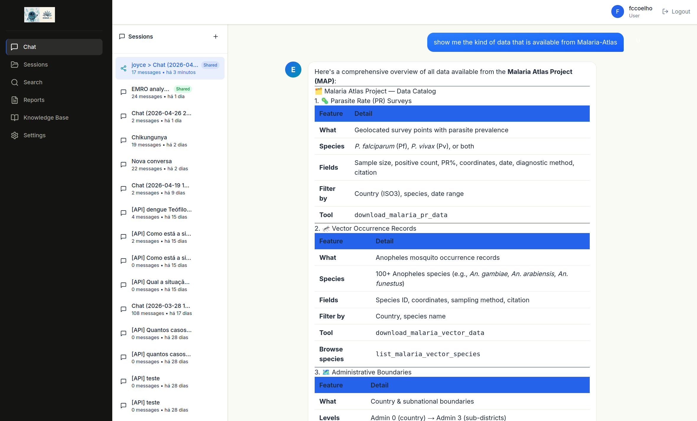
Reports¶
EpiDBot can generate comprehensive PDF and Markdown reports from your analyses, using built-in templates with distinct visual styles.
Report Templates¶
EpiDBot ships with 6 built-in report templates, each with its own structure and colour theme:
| Template | Best for | Style |
|---|---|---|
| Outbreak Investigation | Disease outbreak reports | Cyan/teal accent |
| Rapid Risk Assessment | Risk scoring and confidence assessment | Red/orange risk indicators |
| Epidemiological Summary | Operational surveillance summaries | Green accent, data-forward |
| Scientific Report | Academic publications | Black/serif, formal |
| Field Investigation | Short-term field investigation reports | Blue accent, narrative style |
| Technical Report | General technical/analytical reports | Purple accent, code-friendly |
You can also upload your own custom templates (Markdown structure + CSS theme) and share them with other users. Templates are managed on the Reports page — click the Templates header to expand the template gallery.
Generated PDFs include the Kwar-AI logo in the footer alongside the "Generated by EpidBot" text.
Generating a Report¶
Ask EpiDBot to create a report with a specific template:
Generate a structured report on dengue trends in Brazil for 2023 using the Outbreak Investigation template
Create a rapid risk assessment for the current chikungunya outbreak
EpiDBot will compile the analysis results, plots, and interpretations into a formatted document using your selected template.
Downloading Reports¶
- Navigate to Reports in the sidebar
- Browse your generated reports
- Click the Download PDF or Download Markdown icon
Each report card shows the title, type (analysis, summary, data quality, comparison), creation date, file size, and number of images. The card toolbar also provides Edit, Add to project, Improve with AI, Download LaTeX (ZIP), BibTeX (when the report has references), and share actions.
Managing Reports¶
- Search reports by title or type
- Delete reports you no longer need (with confirmation)
- Version history — click a report to open the editor, where you can view all past versions and restore a previous version (Max plan)
- Edit and regenerate — modify the markdown content and regenerate the PDF
- Admins can toggle between "All Reports" and "My Reports" to view all users' reports
LaTeX Export¶
Plan requirement
LaTeX export requires the Max plan.
Click the Download LaTeX (ZIP) button on a report card to get a ready-to-compile archive containing:
- The
.texsource — open it directly in Overleaf or any LaTeX editor figures/— all figures referenced by the report (converted to PNG where needed)references.bib— a BibTeX bibliography; in-text citations are rewritten to proper\cite{...}commandscode/— every analysis snippet linked to the report, with descriptive names and a README
Scientific Manuscripts¶
Plan requirement
The scientific manuscript agent requires the Max plan.
Ask EpiDBot to write a full manuscript and it launches a multi-step AI pipeline (plan, analyze, write, reference, review) that produces a publication-oriented IMRaD report:
Write a scientific manuscript on dengue trends in Rio de Janeiro from 2020 to 2024 using SINAN data
Manuscript generation runs as a background job (typically 10–15 minutes) — you can keep chatting meanwhile, and a "Manuscript ready" banner with a link appears when it is done. Manuscripts include:
- A publication-grade Methods section with the full data-provenance flow, formal specification of every model and metric, and a reproducibility statement
- Numbered equations that can be referenced in the text, on screen, in the PDF, and in the LaTeX export
- An Analysis code panel on the report page listing every snippet used, each with Open in IDE and Copy actions
Plan Limits for Reports¶
- Free — up to 3 reports per month; downloaded PDFs carry a light "FREE PLAN" watermark
- Pro — unlimited reports, no watermark
- Report sharing requires Pro; co-authoring, Zenodo publishing, version history, LaTeX export, and Overleaf push require Max
See Subscription Plans & Feature Gating for the full matrix.
Sharing Reports¶
Share reports with other EpiDBot users:
- Click the share icon on a report card
- Enter a username and choose Can view or Can edit permission
- Shared reports appear in the recipient's Reports page with a shared badge
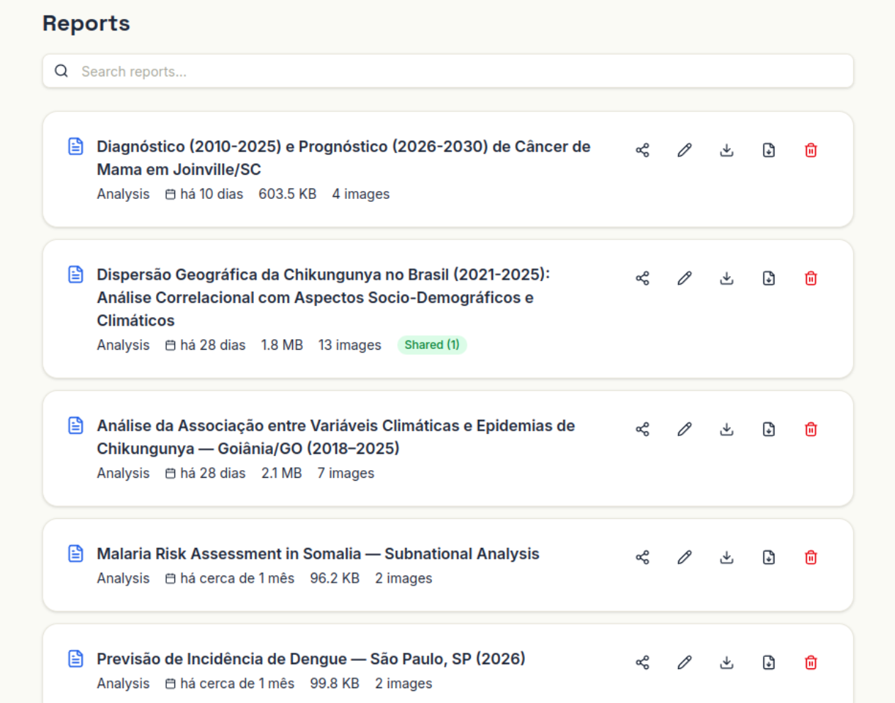
Sessions¶
Every chat conversation is automatically saved as a session. You can view, resume, rename, share, and delete sessions.
Accessing Sessions¶
Click Sessions in the sidebar to see all your conversations.
The session sidebar in the chat view can be collapsed by clicking the collapse button in its header. This gives you more space for the chat. Click the expand button to bring it back.
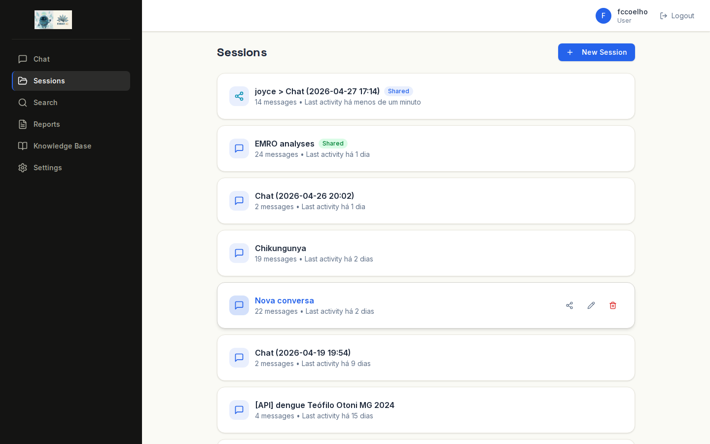
Session Cards¶
Each session card displays:
- Session name
- Message count
- Last activity time (e.g., "2 hours ago")
- Shared badge if the session has been shared with or by others
Managing Sessions¶
| Action | How |
|---|---|
| Create new session | Click the + button, type a name, press Enter |
| Rename a session | Click the pencil icon on the session card |
| Delete a session | Click the trash icon (confirms before deleting) |
| Resume a session | Click the session card to open the conversation |
Sharing Sessions¶
You can share sessions with other EpiDBot users:
Plan limits
The Free plan allows 1 active share link; Pro and above have unlimited share links. See Subscription Plans & Feature Gating.
- Click the share icon on a session card
- Type a username in the dialog (autocomplete will suggest matches)
- Choose a permission level:
- Can view — read-only access to the conversation
- Can edit — full access to continue the conversation
- Click Share
To revoke access, open the share dialog and click Revoke access next to the user's name.
Shared Session Restrictions¶
- Sessions shared with you as "read-only" cannot be modified — the input area is replaced with a lock icon and message
- Sessions received from others cannot be renamed, deleted, or re-shared
- When someone shares a session with you, a blue notification banner appears at the top of your chat
Search¶
The search page lets you find content across all your conversations and saved code snippets, with filters to narrow results by type.
Searching¶
- Navigate to Search in the sidebar
- Enter your search query in the text field
- Use the type selector tabs to filter results:
- All — search both chat messages and code snippets
- Sessions — search only chat conversation history
- Code Snippets — search only saved analysis code
- Optionally filter by session or date range
- Results appear in two categories:
- Code Snippets — reusable code with language badges and download buttons
- Chat Messages — matching messages with content preview and timestamps
Search Results¶
- Click any chat message result to navigate directly to that conversation
- Code snippets can be expanded to view the full source code
- Export individual messages as Markdown
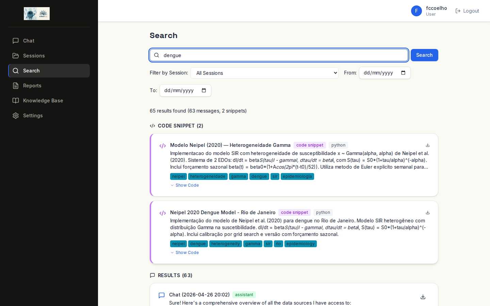
Knowledge Base¶
The knowledge base stores documents and references that EpiDBot can search when answering your questions. It supports semantic search across embedded documents.
Checking Status¶
The knowledge base status card shows whether the service is healthy and displays the current version. Click Check Status to refresh.
Searching the Knowledge Base¶
- Enter a search query in the search field
- Optionally select a collection to narrow results
- Results show: document name, relevance score, collection, and content preview
Adding Sources¶
Administrator only
Adding sources to the knowledge base (web pages, text, document uploads, and Ministry of Health publications) is restricted to administrators. Regular users have read-only access: searching the knowledge base and browsing collections, sources, and wikis is available on all plans.
Administrators can add content to the knowledge base in three ways:
| Method | What to Do |
|---|---|
| Web Page | Paste a URL and click "Add Web Page" — EpiDBot will fetch, extract, and embed the content |
| Text Content | Provide a document name and paste the text content |
| Upload Document | Upload a file (.pdf, .txt, .md, .doc, .docx) |
When adding content, select a target collection (or use the default collections: datasus, epidemiology, methodology).
Managing Collections¶
The right panel shows:
- Collections — all collections with their document counts
- Sources — all documents with name and collection, sortable alphabetically
Wiki and Knowledge Graph¶
The Wiki tab turns each collection into a browsable, Wikipedia-style knowledge structure automatically built from its documents:
- Page tree — pages organized by category (Sources, Entities, Concepts, Synthesis), with clickable
[[wikilinks]]between related pages - Ask the wiki a question — type a question and get a synthesized answer with cited sources, a confidence level, and suggested follow-up questions (Max plan)
- Graph view — click the Graph button to explore the collection's knowledge graph: nodes for pages, entities, and concepts, with status chips showing node/edge counts and the top hub pages. Available on all plans.
You can also query the wiki and its knowledge graph directly from the chat. Admins can rebuild the knowledge graph from the Administration > Wiki Management card, which also displays live graph statistics.
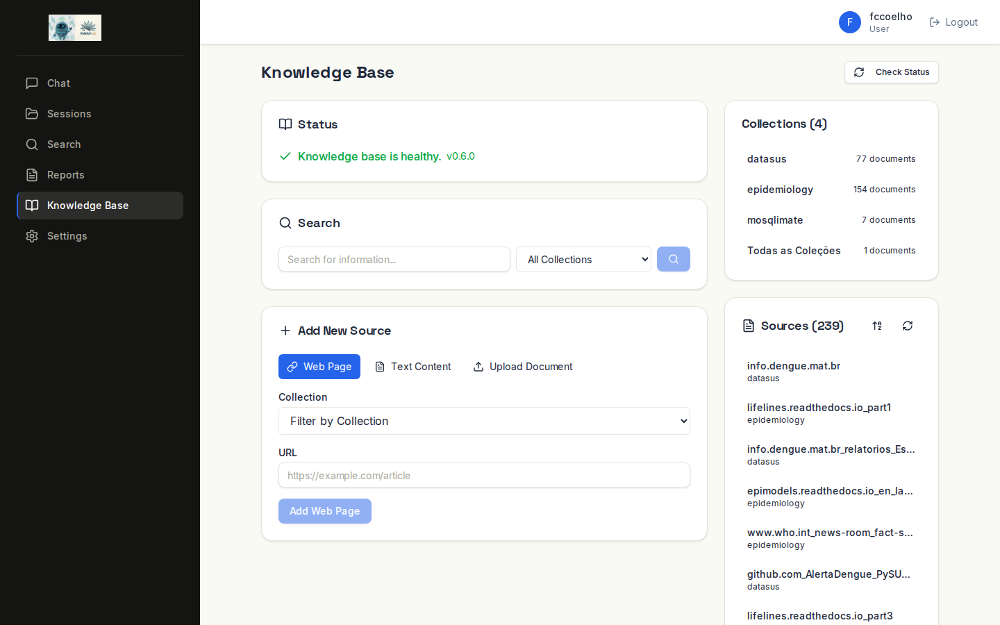
Settings¶
The settings page lets you manage your profile, security, API access, subscription, and language preferences.
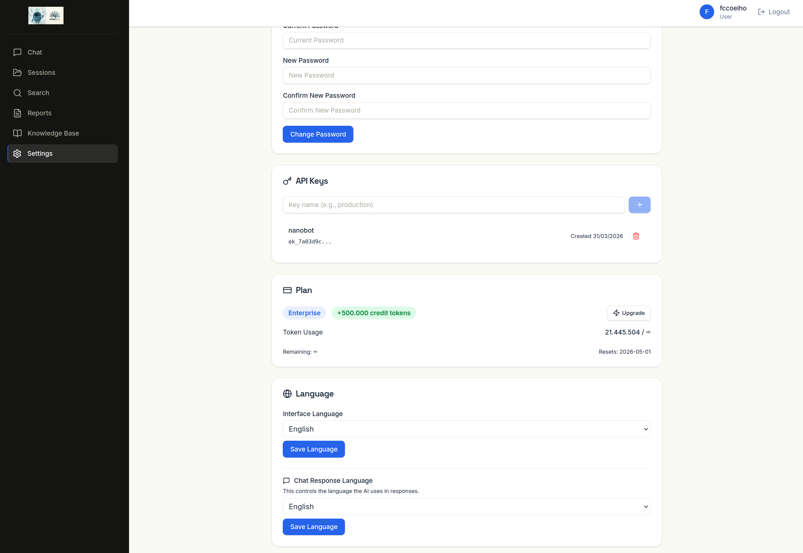
Profile¶
Edit your username, email, and CPF/CNPJ (required for payments in Brazil). Click Update Profile to save.
Change Password¶
Provide your current password and a new password (minimum 8 characters). The new password must be confirmed.
API Keys¶
API keys allow programmatic access to EpiDBot's REST API. Requires the Max plan (see Subscription Plans & Feature Gating).
- Create a key: Enter a name and click create. The key is shown once — copy it immediately, as it cannot be viewed again.
- Manage keys: View existing keys (showing name and prefix), delete keys you no longer need.
External Agents¶
External agents are OpenClaw-compatible AI assistants (such as nanobot) running outside EpiDBot. Once registered, EpiDBot can send messages to them during a conversation and relay their responses back to you. This is the reverse of the EpiDBot skill that lets external agents query EpiDBot — it enables EpiDBot to consult your agents. Requires the Max plan.
Registering an Agent¶
In Settings > External Agents, fill in three fields and click Register Agent:
| Field | Description | Example |
|---|---|---|
| Name | A unique label for this agent (letters, numbers, spaces, hyphens, underscores; max 100 characters). You will use this name when asking EpiDBot to contact the agent. | my-nanobot |
| Base URL | The public HTTPS endpoint where the agent is reachable. Must not resolve to a private or loopback IP address (blocked by SSRF protection). | https://my-agent.example.com |
| Bearer Token | The authentication token EpiDBot will send in the Authorization: Bearer header. This is the token your agent's API expects. Stored encrypted in the database. |
sk-abc123... |
EpiDBot sends messages to your agent using the standard OpenAI-compatible /v1/chat/completions endpoint. Most agent runtimes (including nanobot's nanobot serve command) expose this endpoint by default.
Using External Agents¶
Once registered, you can ask EpiDBot to consult the agent at any time during a conversation:
"Consult my agent named my-nanobot and ask: what is the current dengue situation in Southeast Asia?"
EpiDBot will call the query_external_agent tool, which sends your message to the agent's API and returns the reply. You can register multiple agents and address each by name.
Managing Agents¶
- View — registered agents appear in a list with their name, URL, and a masked token preview
- Delete — click the trash icon to remove an agent; its encrypted token is permanently deleted from the database
- REST API — agents can also be managed programmatically via
GET/POST/DELETE /api/v1/external-agents
Security¶
- Auth tokens are Fernet-encrypted at rest using the server's master secret — they are never stored in plaintext
- Outbound requests include only the
Authorization: Bearer <token>header and a JSON body - Requests to private IP ranges (127.x, 10.x, 172.16–31.x, 192.168.x, link-local) are blocked to prevent SSRF attacks
Git Integrations¶
Connect your GitHub or GitLab account in Settings > Git Integrations so the agent can work with your repositories from the chat:
- Read (Pro): list repositories, browse files, read file contents, list branches/commits/issues/pull requests, and clone repositories into the session workspace
- Write (Max): create issues, comment on issues, and open pull/merge requests
Personal access tokens are stored encrypted and can be removed at any time.
Zotero¶
Connect a Zotero API key in Settings > Zotero (Pro plan) to let the agent list your Zotero collections, fetch references from your library, and export a report's bibliography straight into Zotero.
Voice¶
Settings > Voice controls server-side speech features used by voice mode: speech-to-text (transcription) and text-to-speech (spoken responses). Availability depends on deployment configuration (GET /api/v1/voice/status); browsers without built-in speech recognition fall back to the server-side transcription service.
Plan & Consultation Usage¶
Your plan determines your daily AI quota and which advanced features you can use. Each consultation represents an interaction with the AI (1 consultation = approximately 50,000 tokens of AI processing).
| Plan | Daily Quota | Consultations/day | Price |
|---|---|---|---|
| Free | 50,000 tokens | 1 | R$0 |
| Pro | 500,000 tokens | 10 | R$97/month |
| Max | 1,500,000 tokens | 30 | R$197/month |
| Team | Unlimited | Unlimited | R$1,425/month |
For the complete feature-gating matrix and per-plan usage limits (monthly reports, share links, dataset storage, and more), see Subscription Plans & Feature Gating.
- Current plan badge — Free, Pro, Max, or Team
- Usage bar — shows consultations used vs. limit, color-coded (green < 70%, yellow 70-90%, red > 90%)
- Reset date — when your quota refreshes
Upgrading Your Plan¶
- Click Upgrade to open the plan selector
- Choose between monthly plans and consultation packs
- Select a payment method:
- PIX — scan the QR code or copy the PIX code, payment is confirmed automatically
- Credit Card — redirected to a secure payment page
- Once payment is confirmed, your plan is updated immediately
Consultation Packs¶
Consultation packs are one-time purchases that do not expire. They are consumed after your monthly quota runs out.
Language Preferences¶
Two independent language settings:
- Interface Language — controls the UI language (sidebar, buttons, labels)
- Chat Response Language — controls the language EpiDBot uses in its analysis responses
You can, for example, set the interface to English while having EpiDBot respond in Portuguese.
Newsletter¶
Subscribe to the weekly bilingual newsletter (Portuguese and English editions) with a roundup of public-health publications and data updates, including:
- Ministry of Health publications and new open-data releases from dados.gov.br
- Mosqlimate/InfoDengue updates and WHO Disease Outbreak News
- Health news from curated RSS feeds
Click Subscribe in the Newsletter card on the Settings page. You will receive a confirmation email and must click its link to activate the subscription (double opt-in). You can unsubscribe at any time from the same card or from the link included in every issue. Sent issues are also available in a web archive, and per-language RSS feeds are linked from the login page. Admins manage the newsletter (schedule, sources, RSS feeds, issues, subscribers, and tips) in Administration > Newsletter.
About¶
Displays the application version and description.
Subscription Plans & Feature Gating¶
EpiDBot offers four subscription plans. Your plan determines both your daily AI usage quota and which advanced features you can access. You can view your current plan, usage, and upgrade at any time in Settings > Plan.
Plans Overview¶
| Plan | Daily AI Quota | Consultations/day | Price |
|---|---|---|---|
| Free | 50,000 tokens | 1 | R$0 |
| Pro | 500,000 tokens | 10 | R$97/month |
| Max | 1,500,000 tokens | 30 | R$197/month |
| Team | Unlimited | Unlimited | R$1,425/month |
1 consultation ≈ 50,000 tokens of AI processing. Daily quotas reset every day and do not accumulate. Consultation packs (one-time purchases that never expire) are consumed after the daily quota runs out.
Usage Limits by Plan¶
| Limit | Free | Pro | Max | Team |
|---|---|---|---|---|
| Reports per month | 3 | Unlimited | Unlimited | Unlimited |
| Active share links | 1 | Unlimited | Unlimited | Unlimited |
| Watermark on PDF reports | Yes | No | No | No |
| Scheduled (periodic) reports | — | 2 | 10 | Unlimited |
| Uploaded datasets | 1 | 10 | 50 | Unlimited |
| Dataset storage | 100 MB | 5 GB | 25 GB | Unlimited |
Feature Gating Matrix¶
Each feature below requires the listed plan or higher. Anything not listed — chat with core DATASUS and WHO data, standard analyses and charts, sandbox code execution, the in-browser IDE, projects, search, session history, report generation within the monthly limit, and the newsletter — is available on all plans, including Free.
Pro¶
| Feature | What You Get |
|---|---|
| Zotero integration | List Zotero collections, fetch references, and export citations to Zotero |
| Git integrations | Read GitHub/GitLab repositories from the chat (issues, PRs, files, clones) |
| Full web scraping | Multi-file webpage scraping with JavaScript/headless rendering |
| All international data sources | ECDC & ECDC Atlas, World Bank, PAHO, HealthData.gov, ANVISA, Mosqlimate, Pathoplexus, Malaria Atlas, GADM, GBIF, Eurostat, and NZ Health data |
| Advanced analysis tools | Causal DAGs, difference-in-differences, interrupted time series, propensity scores, panel regression, multivariate analysis, anomaly detection, decision trees, Markov models, cost-effectiveness, sensitivity analysis, and actuarial modeling (loss reserving, claim models, portfolio aggregation, lifetime models) |
| Custom report templates | Upload your own Markdown + CSS report templates |
| Session sharing | Unlimited session share links (Free: 1) |
| Report sharing | Share reports with other EpiDBot users |
| Scheduled (periodic) reports | Automatically generate reports on a daily/weekly/monthly schedule |
| Project roles | Role-based access inside projects |
| Activity feed | Cross-project activity tracking |
| Artifact provenance | Verify the origin and processing history of analyses |
| Analysis tasks | Assign analyses as trackable tasks in projects |
Max (includes everything in Pro)¶
| Feature | What You Get |
|---|---|
| LaTeX export | Download reports as LaTeX (.tex or ZIP with figures, BibTeX bibliography, and linked analysis code) ready for Overleaf |
| Report version history | Browse and restore previous versions of a report |
| Report co-authoring | Invite co-authors to collaborate on reports |
| Overleaf push | Push reports directly to your Overleaf projects |
| Zenodo publishing | Publish reports to Zenodo with a DOI |
| Public templates | Publish your report templates for the whole community |
| Scientific manuscript agent | AI-assisted manuscript writing with publication-grade Methods sections, numbered equations, and linked analysis code |
| CRATE enrichment | Enrich uploaded datasets with CRATE metadata |
| Wiki query | Ask questions and get synthesized answers from the KB wiki |
| KB analyzer / optimizer | Knowledge base analysis and optimization tools |
| API keys | Programmatic access to the EpiDBot REST API |
| External agents | Register and consult external AI agents (e.g. nanobot) |
| Advanced plots | Raster and geospatial visualizations (GeoTIFF rendering) |
| Git write access | Create issues, comment, and open pull/merge requests |
Team (includes everything in Max)¶
The Team plan includes every Max feature for the whole team, with unlimited usage limits (reports, share links, datasets, scheduled reports — see the table above), plus these Team-exclusive collaboration features:
| Feature | What You Get |
|---|---|
| Team workspaces | Shared team workspaces with pooled resources |
| Workspace context (team memory) | Shared instructions, glossary and decision log per project |
| Bulk KB embedding | Embed many documents into the knowledge base in bulk |
| Report comments | Threaded comments/annotations on reports |
| Human review workflow | Structured peer review of reports before publication |
| Verification attestation | Cryptographic attestation of analysis provenance |
| Incident war-room | Outbreak coordination: signal claiming and shared timelines |
Core data stays free
The core Brazilian DATASUS systems (SINAN, SIM, SINASC, SIH/SIA, CNES, PNI, CIHA) and WHO Global Health Observatory indicators remain available on all plans, including Free.
How Gating Works in Practice¶
- In the chat — if you ask for something your plan does not include, EpiDBot explains which plan is required instead of running the tool, and suggests upgrading in Settings > Plan
- In the interface — gated buttons and cards show a lock badge with the required plan (e.g. "PRO", "MAX") and link to the upgrade page
- Admins bypass all feature gates
Expiry, Grace Period, and Grandfathering¶
- Grace period — if your paid plan expires, you keep full feature access for 7 days (matching the token-quota grace period). After that, your account reverts to Free-plan behaviour.
- Grandfathering — users who already had a paid plan when feature gating was introduced keep access to gated features for 90 days. Users who upgrade afterwards get plan features immediately per the matrix above.
- Upgrades are immediate — once payment is confirmed (PIX or credit card), the new plan's features and quotas apply right away, and new PDF exports no longer carry the Free-plan watermark.
Tips & Best Practices¶
Effective Prompting¶
EpiDBot works best when you are specific about what you want:
| Instead of | Try |
|---|---|
| "Show me data" | "Download SINAN dengue data for Sao Paulo in 2023 and show monthly case counts" |
| "Make a chart" | "Create a bar chart comparing dengue cases across Brazilian states in 2023" |
| "Analyze this" | "Run a temporal analysis of tuberculosis cases by month, broken down by age group" |
Working with Datasets¶
- Start by listing available datasets to understand what data you can access
- Use inspect dataset to see column names and sample data before querying
- For large datasets, filter by year and region to keep queries manageable
- EpiDBot remembers downloaded data within a session — you do not need to re-download
Analysis Workflow¶
- Explore — list datasets, inspect schemas
- Download — fetch the data you need
- Query — ask specific questions about the data
- Visualize — generate charts and maps
- Report — compile findings into a PDF report
Mid-stream Redirection¶
If EpiDBot is going in a direction you did not intend, simply type a new message while it is processing. The current analysis will be interrupted and a new turn begins.
Organizing Work with Projects¶
For anything spanning multiple sessions — a dissertation chapter, an ongoing outbreak investigation — create a project and add your sessions, reports, figures, and datasets to it as you go. You can then share the whole workspace with a colleague in one step instead of sharing items individually.
Multi-language Analysis¶
You can ask questions in any language, and EpiDBot will respond accordingly. You can also mix languages within a session — for example, asking in Portuguese and requesting the output in English.
Supported Languages¶
EpiDBot supports five languages for both the interface and AI responses:
| Language | Interface | AI Responses |
|---|---|---|
| English | Yes | Yes |
| Portugues (Brasil) | Yes | Yes |
| Espanol | Yes | Yes |
| 简体中文 | Yes | Yes |
| العربية | Yes | Yes |
The interface language is set in Settings > Language and can also be auto-detected from your browser. The AI response language is set independently in the same section.
Troubleshooting¶
Common Issues¶
| Issue | Solution |
|---|---|
| Chat not responding | Check your internet connection. A "Reconnecting..." banner indicates a WebSocket issue. |
| Plot images not loading | Reload the page. Plot paths may need to be regenerated after long idle periods. |
| "Quota Exceeded" message | You have used your daily token allowance. It resets daily — or upgrade your plan / use a consultation pack. |
| "This feature requires the Pro/Max/Team plan" | The feature is gated to a higher plan. Upgrade in Settings > Plan — see Subscription Plans & Feature Gating. |
| PDF has a "FREE PLAN" watermark | Watermarks apply to the Free plan. Upgrade to remove it; exports after upgrading are watermark-free. |
| Data download is slow | Large datasets (e.g., national SINAN data) take time to download. Try filtering by state or year. |
| Sandbox execution fails | The sandbox container may be restarting. Retry after a few seconds. |
| External agent not responding | Verify the agent's URL is reachable from the internet, the Bearer token is correct, and the agent is running. Check that the URL does not resolve to a private IP (blocked by SSRF protection). |
| Language not changing | Clear your browser cookies and reload. The language is stored in the NEXT_LOCALE cookie. |
| "This message was not answered" | A previous message failed. Click Retry to resend it. |
| Newsletter confirmation email not arriving | Check your spam folder. Your subscription stays "Pending confirmation" until you click the link in the email. Unsubscribe and subscribe again to resend it. |
| IDE code stops after 30 seconds | In-browser execution has a 30-second limit by design. Download the snippet and run it locally for longer jobs. |
| Cannot add items to a shared project | Only project owners and editors can add or remove items. Ask the owner for editor access. |
Getting Help¶
If you encounter an issue not listed here:
- Check the session history — your previous conversations are always accessible
- Try starting a new session to isolate the problem
- Contact the EpiDBot team via the GitHub repository
Glossary¶
| Term | Definition |
|---|---|
| DATASUS | Brazilian Department of Informatics of the Unified Health System — the primary source of Brazilian public health data |
| SINAN | Sistema de Informacao de Agravos de Notificacao — Brazil's disease notification system |
| Parquet | A columnar storage file format used for efficient data querying |
| DuckDB | An in-process analytical database used by EpiDBot to query parquet files |
| Token | A unit of AI processing usage. Each message consumes tokens based on length and complexity. |
| Session | A conversation thread with EpiDBot. All messages and results are saved within a session. |
| Knowledge Base | A collection of embedded documents that EpiDBot can search for relevant information |
| Dream | EpiDBot's self-improvement system that analyzes conversations to discover and refine analysis skills |
| Skill | A reusable analysis pattern discovered by the Dream system, automatically applied when relevant |
| Sandbox | An isolated Docker container for executing Python and SQL code safely |
| Catalog | A metadata index of all downloaded datasets, their schemas, and row counts |
| Raster | A gridded geospatial data format (e.g., GeoTIFF) used for continuous surface maps |
| IBGE | Instituto Brasileiro de Geografia e Estatistica — Brazil's geography and statistics institute |
| WHO GHO | World Health Organization Global Health Observatory — a repository of health indicators |
| ECDC | European Centre for Disease Prevention and Control |
| PAHO | Pan American Health Organization |
| GADM | Database of Global Administrative Areas — provides boundary shapefiles |
| PIX | Brazilian instant payment system used for subscription payments |
| Voice Input | Browser-based speech recognition for entering messages by voice |
| Lightbox | Full-size image overlay for previewing plots at their natural resolution |
| User Dataset | A dataset uploaded by a user (CSV, Excel, GeoJSON, etc.), stored privately and queryable like public data |
| Version History | A timeline of saved report versions that can be browsed and restored |
| Project | A workspace that links related sessions, reports, figures, and datasets around a common theme, and can be shared as a whole |
| Pyodide | Python compiled to WebAssembly — the technology that powers the in-browser code editor (IDE) |
| Newsletter | Weekly bilingual (PT/EN) email roundup of public-health publications, datasets, and news |
| BibTeX | Bibliography file format used by LaTeX; report exports include a references.bib file |
| Knowledge Graph | A network of wiki pages, entities, and concepts built from knowledge base collections, explorable in the Graph view |
| External Agent | An OpenClaw-compatible AI assistant (e.g. nanobot) registered by a user, which EpiDBot can send messages to and relay responses from |
| OpenClaw | An open agent runtime/platform whose agents can install and invoke "skills" — packaged capabilities described by a SKILL.md manifest |
| nanobot | A lightweight, open-source personal AI agent that exposes an OpenAI-compatible /v1/chat/completions endpoint for receiving messages |
| Feature Gate | A plan-based restriction that limits a feature to a minimum subscription plan (Free < Pro < Max < Team) |
| Grace Period | The 7-day window after a paid plan expires during which feature access is retained |
| Grandfathering | The 90-day window during which existing paid users keep access to features that became gated |
EpiDBot is developed by Kwar-AI. For technical documentation, visit the GitHub repository.